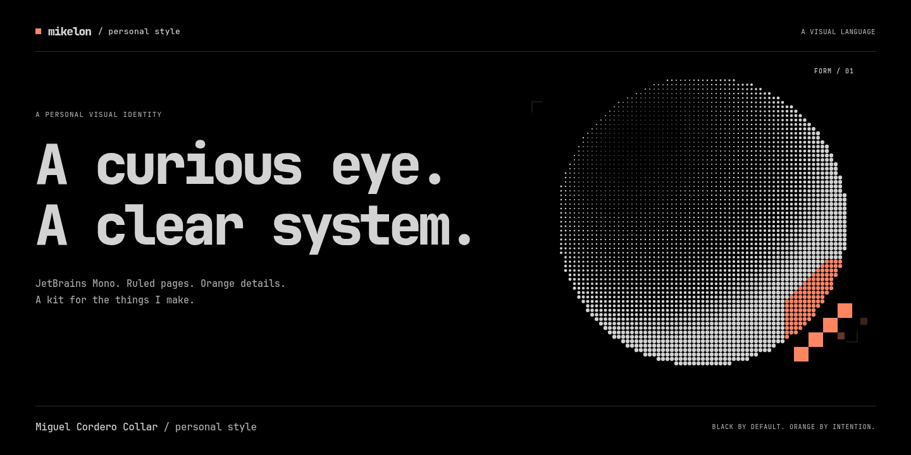
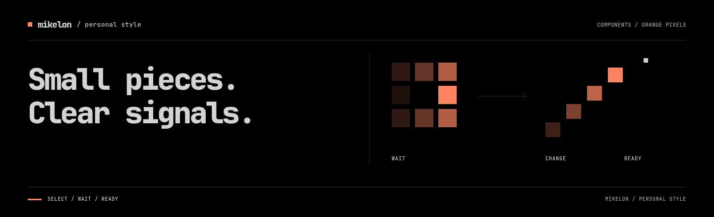
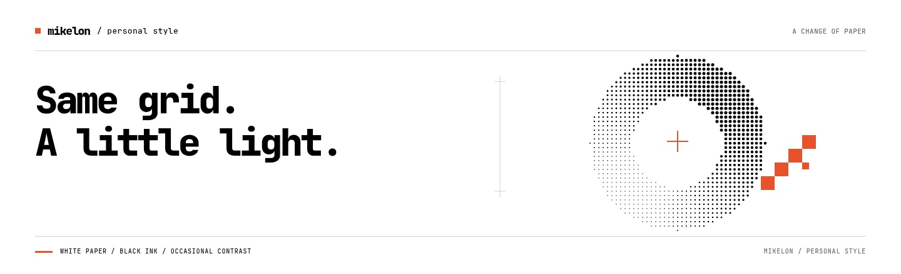
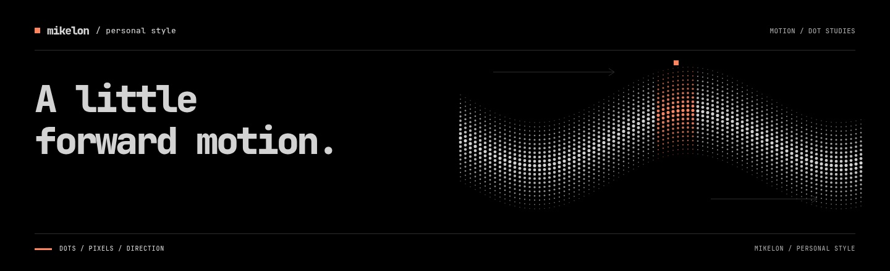

mikelon / README artwork
One identity.
Four compositions.
HTML, local type and original procedural graphics. JPEG exports for the README.




Edit the individual HTML pages, banner.css or graphics.js, then run node banners/export.mjs from the project folder. Preserve the bundled font licence when copying these sources.